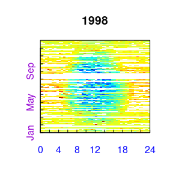
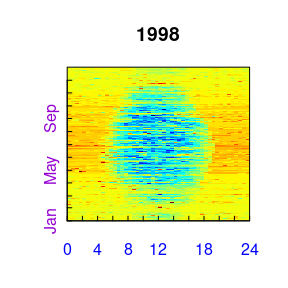
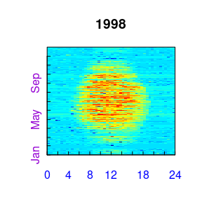

The workflow starts with importing the half-hourly data. The example,
reads a text file with data of the year 1998 from the Tharandt site and
converts the separate decimal columns year, day, and hour to a POSIX
timestamp column. Next, it initializes the sEddyProc
class.
## Error in get(paste0(generic, ".", class), envir = get_method_env()) :
## object 'type_sum.accel' not found
library(dplyr)
#+++ Load data with 1 header and 1 unit row from (tab-delimited) text file
fileName <- getExamplePath('Example_DETha98.txt', isTryDownload = TRUE)
EddyData <- if (length(fileName)) fLoadTXTIntoDataframe(fileName) else
# or use example dataset in RData format provided with REddyProc
Example_DETha98
#+++ Replace long runs of equal NEE values by NA
EddyData <- filterLongRuns(EddyData, "NEE")
#+++ Add time stamp in POSIX time format
EddyDataWithPosix <- fConvertTimeToPosix(
EddyData, 'YDH',Year = 'Year',Day = 'DoY', Hour = 'Hour') %>%
filterLongRuns("NEE")
#+++ Initalize R5 reference class sEddyProc for post-processing of eddy data
#+++ with the variables needed for post-processing later
EProc <- sEddyProc$new(
'DE-Tha', EddyDataWithPosix, c('NEE','Rg','Tair','VPD', 'Ustar'))A fingerprint-plot of the source half-hourly shows already several gaps. A fingerprint-plot is a color-coded image of the half-hourly fluxes by daytime on the x and and day of the year on the y axis.
EProc$sPlotFingerprintY('NEE', Year = 1998)
For writing plots of data of several years to pdf see also
The second step, is the estimation of the distribution of uStar thresholds, to identify periods of low friction velocity (uStar), where NEE is biased low. Discarding periods with low uStar is one of the largest sources of uncertainty in aggregated fluxes. Hence, several quantiles of the distribution of the uncertain uStar threshold are estimated by a bootstrap.
The friction velocity, uStar, needs to be in column named “Ustar” of the input dataset.
EProc$sEstimateUstarScenarios(
nSample = 100L, probs = c(0.05, 0.5, 0.95))
EProc$sGetEstimatedUstarThresholdDistribution()## aggregationMode seasonYear season uStar 5% 50% 95%
## 1 single NA <NA> 0.4162500 0.3981380 0.4629823 0.6278467
## 2 year 1998 <NA> 0.4162500 0.3981380 0.4629823 0.6278467
## 3 season 1998 1998001 0.4162500 0.3981380 0.4629823 0.6278467
## 4 season 1998 1998003 0.4162500 0.3403006 0.4161250 0.5672456
## 5 season 1998 1998006 0.3520000 0.3137000 0.3890794 0.4713304
## 6 season 1998 1998009 0.3369231 0.2395846 0.3816705 0.5275798
## 7 season 1998 1998012 0.1740000 0.2329000 0.4248958 0.5931500The output reports annually aggregated uStar estimates of 0.42 for the original data and 0.4, 0.46, 0.63 for lower, median, and upper quantile of the estimated distribution. The threshold can vary between periods of different surface roughness, e.g. before and after harvest. Therefore, there are estimates for different time periods, called seasons. These season-estimates are by default aggregated to entire years.
The subsequent post processing steps will be repeated using the four threshold scenarios (non-resampled and tree quantiles of the bootstrapped distribution). They require to specify a -threshold for each season and a suffix to distinguish the outputs related to different thresholds. By default the annually aggregated estimates are used for each season within the year.
EProc$sGetUstarScenarios()## season uStar U05 U50 U95
## 1 1998001 0.41625 0.398138 0.4629823 0.6278467
## 2 1998003 0.41625 0.398138 0.4629823 0.6278467
## 3 1998006 0.41625 0.398138 0.4629823 0.6278467
## 4 1998009 0.41625 0.398138 0.4629823 0.6278467
## 5 1998012 0.41625 0.398138 0.4629823 0.6278467The second post-processing step is filling the gaps in NEE using information of the valid data. Here, we decide to use the same annual threshold estimate in each season, as obtained above, and decide to compute uncertainty also for valid records (FillAll).
EProc$sMDSGapFillUStarScens('NEE')The screen output (not shown here) already shows that the
-filtering
and gap-filling was repeated for each given estimate of the
threshold , i.e. column in uStarThAnnual, with marking 22%
to 38% of the data as gap. For gap-filling without prior
-filtering
using sEddyProc_sMDSGapFill or for applying single or
user-specified
thresholds using sEddyProc_sMDSGapFillAfterUstar see
vignette("uStarCases").
For each of the different
threshold estimates a separate set of output columns of filled NEE and
its uncertainty is generated, distinguished by the suffixes given with
uStarSuffixes.
grep("NEE_.*_f$",names(EProc$sExportResults()), value = TRUE)
grep("NEE_.*_fsd$",names(EProc$sExportResults()), value = TRUE)## [1] "NEE_uStar_f" "NEE_U05_f" "NEE_U50_f" "NEE_U95_f"
## [1] "NEE_uStar_fsd" "NEE_U05_fsd" "NEE_U50_fsd" "NEE_U95_fsd"A fingerprint-plot of one of the new variables shows that gaps have been filled.
EProc$sPlotFingerprintY('NEE_U50_f', Year = 1998)
The third post-processing step is partitioning the net flux (NEE) into its gross components GPP and Reco. The partitioning needs to distinguish carefully between night-time and day-time. Therefore it needs a specification of geographical coordinates and time zone to allow computing sunrise and sunset. Further, the missing values in the used meteorological data need to be filled.
For VPD, which is important for daytime flux partitioning, and additional gap-filling of longer gaps based on minimum daily temperature (assumed dewpoint) is available.
EProc$sSetLocationInfo(LatDeg = 51.0, LongDeg = 13.6, TimeZoneHour = 1)
EProc$sMDSGapFill('Tair', FillAll = FALSE, minNWarnRunLength = NA)
EProc$sMDSGapFill('VPD', FillAll = FALSE, minNWarnRunLength = NA)
EProc$sFillVPDFromDew() # fill longer gaps still present in VPD_fNow we are ready to invoke the partitioning, here by the night-time approach, for each of the several filled NEE columns.
EProc$sMRFluxPartitionUStarScens()The results are stored in columns Reco and
GPP_f modified by the respective
threshold suffix.
## [1] "Reco_U05" "GPP_U05_f" "Reco_U50" "GPP_U50_f" "Reco_U95"
## [6] "GPP_U95_f" "Reco_uStar" "GPP_uStar_f"Visualizations of the results by a fingerprint plot gives a compact overview.
EProc$sPlotFingerprintY('GPP_U50_f', Year = 1998)
For using daytime-based flux partitioning see sEddyProc_sGLFluxPartition
computing columns GPP_DT and Recco_DT.
The results of the different threshold scenarios can be used for estimating the uncertainty due to not knowing the threshold.
First, the mean of the GPP across all the year is computed for each -scenario and converted from to .
FilledEddyData <- EProc$sExportResults()
uStarSuffixes <- colnames(EProc$sGetUstarScenarios())[-1]
#suffix <- uStarSuffixes[2]
GPPAggCO2 <- sapply( uStarSuffixes, function(suffix) {
GPPHalfHour <- FilledEddyData[[paste0("GPP_",suffix,"_f")]]
mean(GPPHalfHour, na.rm = TRUE)
})
molarMass <- 12.011
GPPAgg <- GPPAggCO2 * 1e-6 * molarMass * 3600*24*365.25
print(GPPAgg)## uStar U05 U50 U95
## 1919.176 1903.335 1946.106 1923.839The difference between those aggregated values is a first estimate of uncertainty range in GPP due to uncertainty of the threshold.
In this run of the example a relative error of about 2.2% is inferred.
For a better but more time consuming uncertainty estimate, specify a
larger sample of
threshold values, for each repeat the post-processing, and compute
statistics from the larger sample of resulting GPP columns. This can be
achieved by specifying a larger sequence of quantiles when calling
sEstimateUstarScenarios in place of the command shown
above.
EProc$sEstimateUstarScenarios(
nSample = 200, probs = seq(0.025,0.975,length.out = 39) )The results still reside inside the sEddyProc class. We
first export them to an R Data.frame, append the columns to the original
input data, and write this data.frame to text file in a temporary
directory.
FilledEddyData <- EProc$sExportResults()
CombinedData <- cbind(EddyData, FilledEddyData)
fWriteDataframeToFile(CombinedData, 'DE-Tha-Results.txt', Dir = tempdir())
# or without relying on data.frame EddyData
# with replacing column DateTime by Year, DoY, and Hour:
fWriteDataframeToFile(
cbind(EProc$sExportData(), EProc$sExportResults()), 'DE-Tha-Results_ydh.txt',
isSplitDatetime=TRUE, Dir = tempdir())
# tmp <- fLoadTXTIntoDataframe(file.path(tempdir(),'DE-Tha-Results_ydh.txt'))